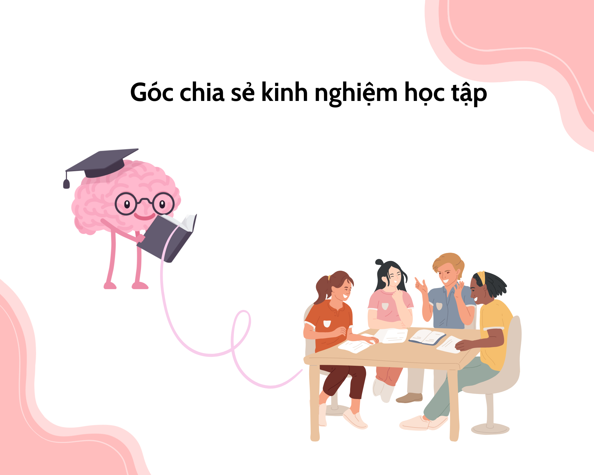

Mẹo học nhanh nhớ lâu
Tập trung vào các kỹ thuật ghi nhớ, ôn tập có chủ đích và tạo liên kết ý nghĩa để nhớ lâu.
Chia sẻ mẹo thực tế, kỹ năng và chiến lược giúp bạn học nhanh hơn, nhớ lâu hơn và quản lý thời gian hiệu quả.
Tại Blog Kinh nghiệm học tập, chúng tôi tin rằng học tập hiệu quả không chỉ dựa vào thời gian, mà còn ở phương pháp. Website này được tạo ra để chia sẻ những kinh nghiệm thực tế, mẹo học nhanh, ghi chép thông minh và quản lý thời gian hợp lý. Cùng nhau, chúng ta sẽ khám phá cách học thông minh hơn — không phải học nhiều hơn.
👉 Bắt đầu khám phá ngay với những mẹo học nhanh và ghi nhớ hiệu quả nhất!
Tập trung vào các kỹ thuật ghi nhớ, ôn tập có chủ đích và tạo liên kết ý nghĩa để nhớ lâu.
Cách ghi chép hiệu quả, sử dụng sơ đồ tư duy và tóm tắt khoa học để giảm thời gian ôn luyện.
Chiến lược lập kế hoạch, phân bổ thời gian và dùng Pomodoro để tối đa năng suất học.
Giới thiệu công cụ, ứng dụng và mẹo dùng phần mềm để học hiệu quả hơn.
Chiến lược ôn thi, cách giữ bình tĩnh khi thi và mẹo xử lý câu hỏi khó.